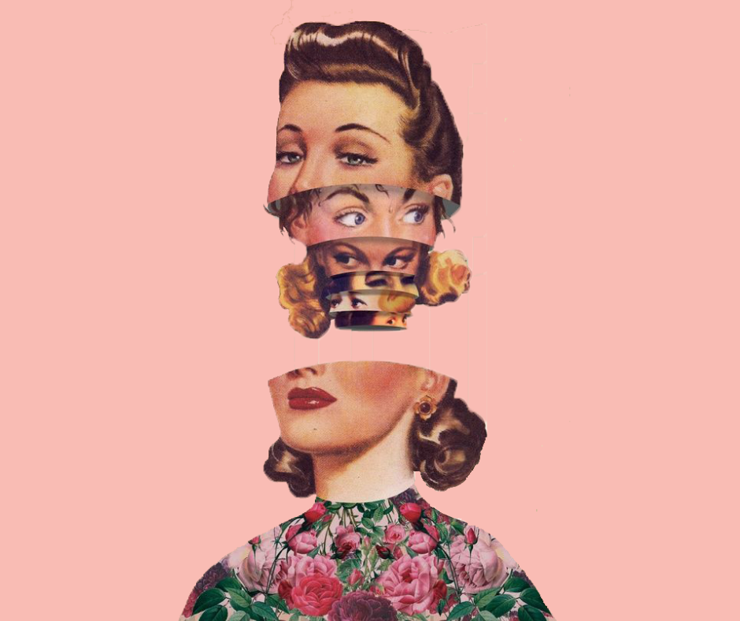

What female friendship break-ups taught me
11th Mar 2020
There are many people that come and go in our lives. Some leave because they want to, others leave because you make them, and a few might mutually agree there is nothing beneficial in staying in each other’s lives.
A friendship is by definition a relationship between friends, a state of mutual trust, support and attachment. Throughout my life, the predominant gender among my diverse groups of friends was female. I will talk about my male friends as well, but that’s for another time.
Today I want to focus on what female friendship means to me, the effect it has on my existence and on my lifestyle and how much friendship resembles a relationship with a partner, with a few exceptions of course.
Friendship vs relationship - the inception, development, torment (in some cases) and the heartbreak that comes whenever one of the two ends is pretty similar. One important thing I learnt from my friendships is that, unfortunately, they don’t always last forever. I have lost many girlfriends over the years, and others lost me, and I’m sure all of us will continue to lose and discover friendships until the day we die.
Close friends, acquaintances, friends of friends - I used to know so many, to hang out with them at numerous parties and social events. Friendships that lasted a night, friendships that lasted a summer, friendships that lasted years - I’m sure we all experienced these types of connections.
Looking back, it is clear as day why I lost certain female friends, or why they lost me - of course, there are also the situations where I don’t know what the fuck happened. In terms of the ghosts of my girlfriends past, I can only speak for myself and say that in highschool I was too clingy and territorial with them. I was loyal to them to the point of my destruction and their suffocation. Basically, just like a super annoying golden retriever.
I know I was looking at my girlfriends as someone to hold the place of many things missing from my childhood: a loving family, affection, understanding, to be accepted and liked by my peers, someone to keep me company. I had no idea what boundaries were back then, and why I should back off a little and not compete and compare how much time they had for me and how much time they had for their boyfriends.

As I transitioned into womanhood, some of my longest friendships started to disintegrate because we had grown apart, each of us flourishing in different directions. But growing apart takes a very long time, and sometimes the damage is so big that it cannot be undone - sometimes it’s just too little, too late.
Losing girlfriends is painful, it’s sad, it’s heartbreaking. But there are many things to learn from losing these people that were once so important to you. If I were to name a few things that we can find in the ideal friend, such as: trust, empathy, support, attachment, respect, loyalty - I think we can agree that this list overlaps a bit with the list of qualities we look for in a life partner.
Today, I strongly believe that “less (friends) is more”. I no longer look for absurd or unrealistic things in my girlfriends, and the list of my expectations is short and sweet. The expectations are to receive back the same amount of respect, consideration, honesty, empathy and moral support that I offer. To me, the beauty in all of this lies in the fact that when a friendship is mutual and real, everything comes naturally. I don’t have to force anything, I don’t have to chase anyone, I don’t have to beg or demand anything - it’s already there. This is why I don’t invest in toxic, manipulative, unreliable, time and energy draining friendships anymore - to be fond of a person and nostalgic of who you both were at some point in life is not enough to sustain the longevity of a friendship.
As you go further in life and gain more and more knowledge, you realise that actually you don’t have so much free time anymore - you barely have any time left after work, responsibilities and domestic chores. And all you are left you are with is a few hours once in a few weeks to have a coffee with your girlfriend.
Adulthood comes with a strong need of prioritisation: who and what you are spending your free time on. Don’t get me wrong, I still reminisce at times about my long lost girlfriends. I still smile when I find something that reminds me of them. I am still happy for them if I hear they are now happy, and went further in life than the point where I left them when we stopped being friends. I am still happy to hear they changed for the better and I am still saddened if I hear they are not doing well and a lot of bad shit is going on in their lives.
Life does, however, go on. Whilst it’s not always in our power to make a friendship work and resist the test of time, we can still do what we possibly can to make our friendships worth our time and energy, to support our friends and let them know we appreciate their time and appreciate them as a person. We can respect the boundaries of our friendships, be honest, understand and accept what the other person is going through. Accept the fact that sometimes we won’t be able to see each other or talk to each other often. At the same time, it’s important to let them know that we’ll still be here at the end of the day.
A real, powerful, meaningful friendship will resist the test of time as long as the desire and work that goes into sustaining the friendship and supporting each other through change, no matter what life throws your way, is mutual.